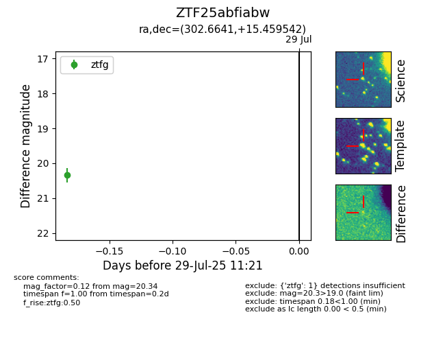

Target ZTF25abfiabw at 2025-07-29 11:21, see:
FINK: fink-portal.org/ZTF25abfiabw
Lasair: lasair-ztf.lsst.ac.uk/objects/ZTF25abfiabw
ALeRCE: alerce.online/object/ZTF25abfiabw
alt names
ZTF25abfiabw (ztf,fink)
coordinates:
equatorial (ra, dec) = (302.6641,+15.45954)
galactic (l, b) = (55.9971,-9.73456)
photometry
last ztfg=20.34
1 ztfg detections
